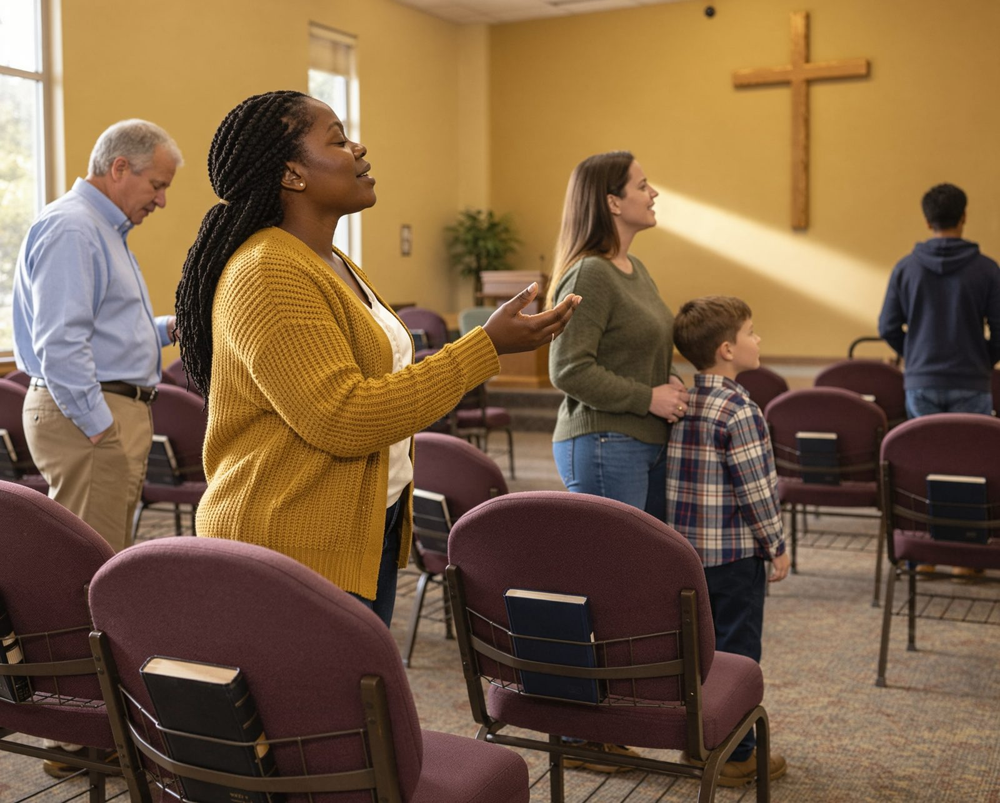

Give
Giving is part of our worship
When we give, we're worshiping. It's one way we thank God for all He has given us and trust Him with what we have. Every gift helps us know Him and make Him known, here in Avon and beyond.
Suggested photo: our church family worshiping together on a Sunday

Give during worship
Giving is part of our Sunday worship service at 10:00 AM. You're welcome to give during the service as we worship together.
Give online
Away on a Sunday, or prefer to give online? You can give a one-time or recurring gift through our secure Church Center page, by bank account or card.
Visiting? Please don't feel any pressure to give. We're just glad you're here.